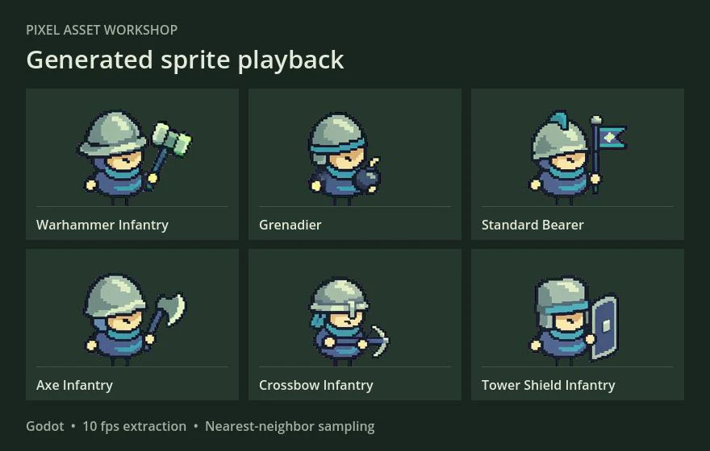

Review sprite playback in Godot
One five-second clip produced six sequences of 50 candidate frames. An automatic despill pass cleans the magenta fringe before the PNGs are loaded into Godot.
Cleaned frames in Godot

Compare with the original
The Godot scene can also load the Blue Archer idle sheet from a local Tiny Swords Free Pack. It aligns the Archer and generated Warhammer Infantry on a shared foot line. Run the local comparison ↗